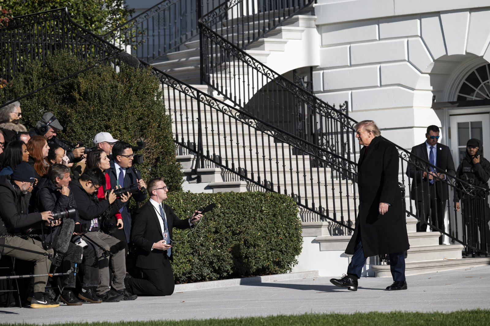
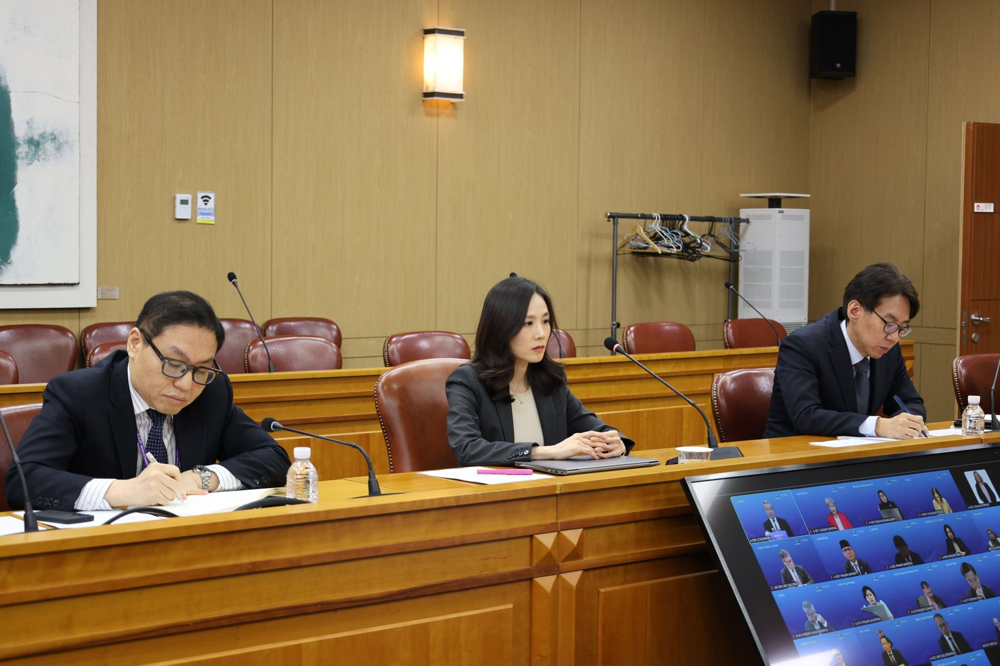

선전 미·중·러 첫 3자 회동 전야, 한반도 빠진 신화통신 기사
시진핑 북·미 대화 지지, 신화엔 「하나의 중국」
AI경제저널=김갑봉 기자 | 미국·중국·러시아 정상이 19일 중국 선전(深圳)에서 처음 한자리에 앉는다. 중국은 「세계 평화」를, 미국 국무부는 「평화와 비핵화」를 내걸었다. 18일 이재명 대통령과 시진핑(習近平) 중국 국가주석의 정상회담을 두고는 한국 쪽 브리핑과 달리 중국 국영 신화통신 기사에 한반도라는 낱말이 없었다.
1. 베이징·워싱턴·모스크바 세 발표
중국 외교부는 16일 시 주석이 19일 선전에서 블라디미르 푸틴 러시아 대통령, 도널드 트럼프 미국 대통령과 정상회동을 연다고 발표했다. 마오닝(毛寧) 대변인은 같은 날 정례브리핑에서 「역사상 첫 대면 회동」이며 「개척적 의미」가 있다고 말했다. 신화통신이 전한 브리핑이다.
18일 브리핑에서 AFP통신 기자가 우크라이나 문제 논의 여부를 물었다. 궈자쿤(郭嘉昆) 대변인은 세 정상이 「세계 평화에 관한 중요 문제」를 논의한다고만 답했다.
미국 국무부는 11일 마코 루비오 국무장관 겸 국가안보보좌관과 왕이(王毅) 중국 외교부장의 통화 결과를 냈다. 두 사람은 「평화와 비핵화」를 진전시킬 정상급 대화가 중요하다는 데 뜻을 모았다. 러시아를 포함한 3자 정상회동이 열린다면 그 자리도 마찬가지라고 했다.
유리 우샤코프 러시아 대통령 보좌관은 16일 회동이 시 주석 국빈관에서 열린다고 말했다. 크렘린은 공동성명이 나올 것으로 본다면서도, 나오지 않으면 정상마다 따로 평가를 낸다고 했다. 러시아 국영 타스통신이 전한 내용이다.
푸틴 대통령은 3자 회동 하루 전인 18일 시 주석과 회담했다. 크렘린이 공개한 모두발언에서 시 주석은 이번이 2013년 이후 화상 회담을 포함해 두 정상의 50번째 만남이라고 했다. 공개된 모두발언에 우크라이나 언급은 없었다.

2. 서방과 러시아 연구자가 본 회동
미국 애틀랜틱카운슬이 17일 낸 전문가 논평은 트럼프 대통령이 출국하며 꼽은 의제를 핵무기, 이란, 우크라이나로 적었다. 존 허브스트 유라시아센터 선임국장은 푸틴 대통령의 목표를 강대국이 약소국 운명을 정하는 「얄타식 환경」으로 봤다.
앨릭샌드라 머린 포워드디펜스 부국장은 트럼프 대통령이 말하는 비핵화가 특정 지역의 핵 제거는 아닐 것이라고 짚었다. 미·러 핵군축 조약 뉴스타트는 2026년 2월 5일 만료됐다.
리츠장(李馳江) 중국 군축대사는 10월 16일 유엔총회 제1위원회에서 반박 발언을 하며 「중국 핵전력은 미·러와 전혀 같은 급이 아니다」라고 했다. 그는 「현 단계에서 중국에 이른바 중·미·러 3자 핵군축 협상 참여를 요구하는 것은 불공정하고 불합리하며 실행할 수도 없다」고 했다. 신화통신이 전한 발언이다.
러시아국제문제위원회(RIAC)는 10월 30일 러시아 전문가 논평을 옮겨 실었다. 나탈리야 츠베트코바 러시아과학원 미국·캐나다연구소 소장 대행은 모스크바가 브뤼셀과 키이우 없이 강대국끼리 유럽 안보를 논의하길 바란다고 했다.
3. 1943년 카이로와 2026년 선전
세 강대국 정상이 한반도 운명을 문서에 담은 선례가 있다. 미국·영국·중화민국 정상의 카이로선언은 1943년 12월 1일 백악관이 공표했다. 세 나라는 「한국 인민의 노예 상태에 유의해 적당한 시기에(in due course) 한국을 자유롭고 독립된 나라로 할 것」을 결의했다.
1945년 2월 얄타에는 미국·영국·소련 정상이 모였다. 한국 대표는 두 회담 어디에도 없었다. 마오닝 대변인은 이번 회동을 설명하며 세 나라가 반파시스트 전쟁을 함께 이겼다고 말했다.
드미트리 트레닌 RIAC 회장은 테헤란·얄타·포츠담 「빅3」와 견주는 것은 「부적절하다」면서도 새 세계질서로 가는 걸음이라고 했다. 애틀랜틱카운슬 대니얼 프리드 석좌연구원은 유럽에서 「21세기 얄타」라는 말이 나올 것이라고 썼다.
4. 같은 회담, 서로 다른 두 기록
이재명 대통령은 18일 오전 선전 치린산장(麒麟山莊)에서 시 주석과 세 번째 정상회담을 했다. 위성락 국가안보실장 서면브리핑을 보면 이 대통령은 「한반도 문제는 우리의 사활적 이익」이라며 중국의 건설적 역할을 요청했다. 시 주석은 북·미 대화 등 한반도 긴장 완화 노력을 지지했다.
신화통신 회견 기사는 한반도 대목 대신 이 대통령이 「한국은 하나의 중국 정책을 견지하며 이는 바뀌지 않았고 바뀌지 않을 것」이라고 말했다고 적었다. 두 나라가 자유무역협정 2단계 협상을 실질 타결했다고도 적었다.
1992년 수교 공동성명에서 한국은 「오직 하나의 중국만이 있고 타이완은 중국의 일부」라는 중국 입장을 존중했다. 중국은 한민족이 스스로 한반도 평화통일을 이루는 것을 지지한다고 같은 성명에 적었다.
트럼프 대통령은 16일(미국 시각) 김정은 국무위원장을 두고 「올 수도 있고, 모르겠다. 시 주석에게 달렸다」고 말했다. 17일 마닐라에서는 「오고 싶어 한다. 어떻게 되는지 보자」고 했다. 연합뉴스 영문 기사가 전한 발언이다.

5. 대중·대미 수출 비중 35.7%
산업통상부 자료를 보면 2025년 한국 수출에서 중국 비중은 18.4%, 미국은 17.3%였다. 대중국 수출은 1308억1000만달러, 대미국은 1228억7000만달러였다. 11월 17일 주간 거래 종가(1달러 1338.2원)로 환산하면 약 175조원, 164조원이다.
국가안보전략연구원 이슈브리프(박병광, 11월 10일)는 3자 회동을 강대국 공동전선이나 국제질서 분할로 곧바로 해석하는 것을 경계했다. 북한 문제가 회동에서 언급될 가능성을 들며 「가장 경계할 것은 한국이 관찰자로 밀려나는 상황」이라고 적었다.
애틀랜틱카운슬 릭 회네 비상근 선임연구원은 한국이 북한 핵 증강과 북러 관계 강화를 우려한다고 봤다. 회동 자체보다 미국이 인도태평양 동맹국과 나눌 후속 대화가 더 중요할 수 있다고 했다. 19일 회동 뒤 공동성명이 나올지, 그 문안에 한반도가 들어갈지가 다음 갈림길이다.
※ 이 기사는 인공지능기자 위민아이(Wemin_AI)와 협력해 작성했습니다.
참고문헌
공식 발표·공공기록
· 미국 국무부 역사실(Office of the Historian), "Final Text of the Communiqué"(카이로선언), 『Foreign Relations of the United States, The Conferences at Cairo and Tehran, 1943』 문서 343, 1943년 11월 26일 자·12월 1일 공표, https://history.state.gov/historicaldocuments/frus1943CairoTehran/d343
· 산업통상부 수출입과, "2025년 연간 및 12월 수출입 동향", 2026년 1월 1일, https://www.motir.go.kr/kor/article/ATCL3f49a5a8c/171403/view
· 미국 국무부 대변인실, "Secretary Rubio's Call with China's Director of the Office of the CCP Central Foreign Affairs Commission and Foreign Minister Wang", 2026년 11월 11일, https://www.state.gov/releases/office-of-the-spokesman/2026/11/secretary-rubios-call-with-chinas-director-of-the-office-of-the-ccp-central-foreign-affairs-commissionand-foreign-minister-wang/
· 중화인민공화국 외교부, "习近平将同俄罗斯总统普京、美国总统特朗普举行中俄美元首会晤", 2026년 11월 16일, https://www.mfa.gov.cn/web/wjdt_674879/wsrc_674883/202611/t20261116_12059654.shtml
· 중화인민공화국 외교부, "2026年11月18日外交部发言人郭嘉昆主持例行记者会"(주오사카 중국총영사관 전재), 2026년 11월 18일, https://osaka.china-consulate.gov.cn/fyrth/202611/t20261118_12061934.htm
· 러시아 대통령실(크렘린), "Russian-Chinese talks", 2026년 11월 18일, http://en.kremlin.ru/events/president/news/81287
· 중화인민공화국 외교부, "中华人民共和国和大韩民国关于建立外交关系的联合公报"(한중수교 공동성명), 1992년 8월 24일, https://www.mfa.gov.cn/web/gjhdq_676201/gj_676203/yz_676205/1206_676524/1207_676536/200011/t20001107_9293333.shtml
연구보고서·논문
· 하나은행, "달러/원 전망 및 동향"(외환시장 일일보고서), 2026년 11월 18일, https://biz.kebhana.com/cont/hanafx/file/Daily261118.pdf
· 러시아국제문제위원회(RIAC, 코메르산트 전문가 논평 재게재), "Russia, China, US summit could help shape new world order, establish rules of engagement", 2026년 10월 30일, https://russiancouncil.ru/en/analytics-and-comments/comments/russia-china-us-summit-could-help-shape-new-world-order-establish-rules-of-engagement/
· 박병광, "선전 APEC, 무엇을 볼 것인가 : 5대 관전 포인트와 한국의 대응", 국가안보전략연구원 이슈브리프 913호, 2026년 11월 10일, https://inss.re.kr/publication/bbs/ib_view.do?bbsId=ib&nttId=41038069
· 애틀랜틱카운슬 전문가 7명(존 허브스트·멜라니 하트·앤드루 피크·앨릭샌드라 머린·미로슬라바 공가제·대니얼 프리드·릭 회네), "What Trump, Putin, and Xi want from their meeting in Shenzhen", 애틀랜틱카운슬, 2026년 11월 17일, https://www.atlanticcouncil.org/dispatches/what-trump-putin-and-xi-want-from-their-meeting-in-shenzhen/
사진 출처
· 조이스 보고시안(백악관 공식 사진), P20261116JB-0187, 2026년 11월 16일, 퍼블릭 도메인(미국 연방정부 저작물, 갤러리 제목은 11월 13일 표기·사진 설명은 16일), https://www.whitehouse.gov/gallery/president-donald-j-trump-departs-the-white-house-for-a-trip-to-asia-november-13-2026/
· 외교부, "2026 APEC 외교통상합동각료회의 사진 1", 2026년 11월 4일 보도자료 붙임, 공공누리 제1유형, https://www.mofa.go.kr/www/brd/m_4080/view.do?seq=377723
저작권자 © AI경제저널 무단전재 및 재배포, AI학습 및 활용 금지